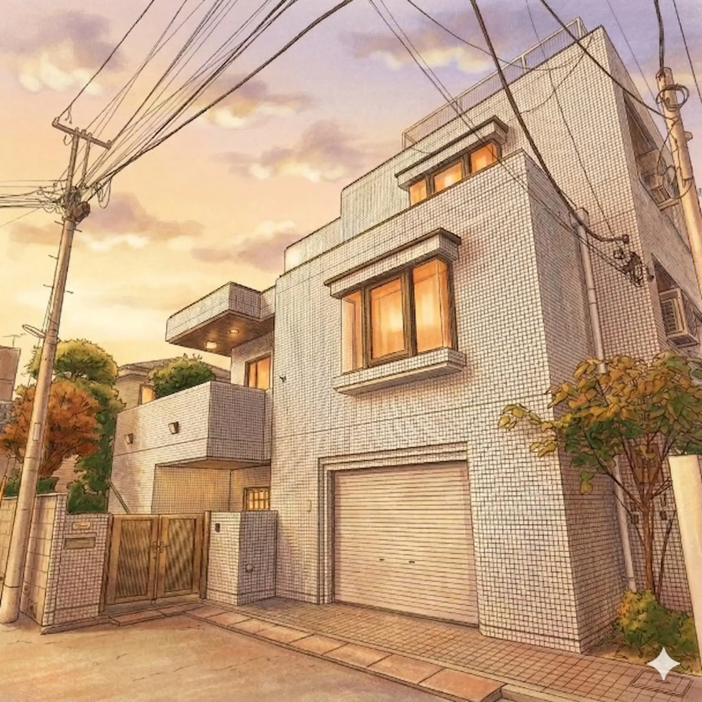

「今日は休んでいい」「今日は頑張れた」。
その両方を肯定できる場所として、とらべは存在しています。
学校に感じる「なんとなくの違和感」の正体が、ここに来ると言語化できるかもしれません。
右足と左足、両足で自分のペースで学んでいくことができる。
止まることも動き。自分の現在地を知る、振り返ることができる。
スタッフ・仲間・保護者。自分だけじゃない、つながりの中で育ちあう。
自由な環境で、自分のペースで学ぶことができます。
一人ひとりの興味関心や特性に合わせた学びを実現します。
「学校の授業が一律すぎて、うちの子には合っていない気がする」
「決まった科目・時間割より、もっと自由に学ばせてあげたい」
「少人数で、一人ひとりと向き合ってくれる場所を探している」
「学校に行き渋っている。でも家にいるだけでは不安…」
その選択肢の一つとして、とらべがあります。
学校に感じる「なんとなくの違和感」の正体が、ここに来ると言語化できるかもしれません。
まずは見学に来てみてください
約1〜2時間 お子さん同伴OK 個別相談無料
2004年設立の「東京コミュニティスクール (TCS)」が20年以上にわたり培ってきたノウハウを活かした第2校としてオープンしました。
学び続ける力の基盤として、日本語の学びを重視しています。
これら三本柱で、個に応じたやり方で学びます。
「私たちはどのように自分らしく生き続けるのか？」などの6つの探究領域のもと学びます。
日々の公園などに加え、多くのアウトドアイベントを用意しています。
畑・川遊び・登山・乗馬・ムササビ観察・スキーなど。
アウトドアに不安がある場合は、無理せず自分のペースで参加を選択できます。
学期ごとに評価を作成し、子どもの現状から将来像まで視野を広げた「学びの方向性」をまとめます。
保護者面談
子ども面談

スタッフが組み立てる時間の他、子どもが自分で選ぶ「余白」の時間がたっぷりあります。「つくりたい」「しりたい」など、一人ひとりがやりたいことを選べます。
スマートボード
iPad / MacBook
工作スペース
屋上エリア
基礎となる日本語の学びや、それぞれの課題に取り組みます。
みんなで昼食をとった後、探究活動やマイプロジェクトを進めます。
一日の学びを振り返り、使った場所を綺麗にします。
多様なバックグラウンドを持つスタッフが、子どもたち一人ひとりに寄り添います。
TCS副理事長、東京都フリースクール等ネットワーク事務局長。教職課程を実体験するため小学校・幼稚園教諭免許を取得。政策提言活動も行う。二児の母。
「子どもたちが自分らしく学べる場所を、20年かけてつくってきました。ここでの出会いが、きっとお子さんの力になると信じています。」
カナダ語学留学後、デンマークのフォルケホイスコーレで「対話」中心の学びに魅せられる。帰国後、栃木県でフリースクール設立・運営経験あり。
「デンマークで学んだのは、"対話"が人を育てるということ。子どもの『なんで？』に、一緒に向き合いたいと思っています。」
生粋の芸術畑出身で、アートセラピーや心理学などを学ぶ。とらべの子どもたちやスタッフを温かく包み込む、母的な存在。
「どんな状態で来てくれても、まず『よく来てくれたね』と伝えたい。ここが、あなたの安心できる場所になりますように。」
実際にとらべを選んだ保護者からのメッセージです。
「公立校では物足りないと感じていた子が、ここで生き生きし始めました。マイプロジェクトを通じて『自分で学ぶ』ということを本当に楽しんでいます。」
小3男子の保護者
在籍1年目 ／ オルタナ教育を探して入学
「先生方が子どもの話をじっくり聞いてくださいます。成績ではなく成長で見てくださる個別評価が、うちの子に本当に合っていました。」
小5女子の保護者
在籍2年目 ／ 一律評価に疑問を感じて入学
「学校に行けなくて悩んでいたとき、見学に来て『合うかどうか一緒に考えましょう』と言われて救われました。押し付けがなくて、安心して通わせられています。」
小2男子の保護者
在籍半年 ／ 不登校がきっかけで入学
助成金制度のご案内（自治体・年度により異なります）
お住まいの自治体によっては、フリースクール利用に対する助成金制度が設けられている場合があります（例：東京都フリースクール等利用者助成金 上限2万円/月）。制度の有無・内容は自治体や年度によって異なり、必ずしも利用できるとは限りません。詳細はお住まいの自治体またはスタッフへお問い合わせください。
自治体の助成金が適用される場合、実質負担が軽減される可能性があります（試算例：990,000円 − 最大240,000円 = 約750,000円/年）
※助成金は自治体・年度・審査により異なり、利用できない場合もあります。上記はあくまで試算例です。
見学前によく寄せられる疑問にお答えします。
{{ faq.a }}
他にご不明な点は、見学・説明会でも何でもお聞きください。
他スクール情報も提供する個別相談を実施中です。
まずはお子さんと一緒に、雰囲気を感じに来てください。
約1〜2時間
じっくり話せる時間を確保
お子さん同伴OK
実際の雰囲気をご体感ください
個別相談 無料
入学後の不安も遠慮なく